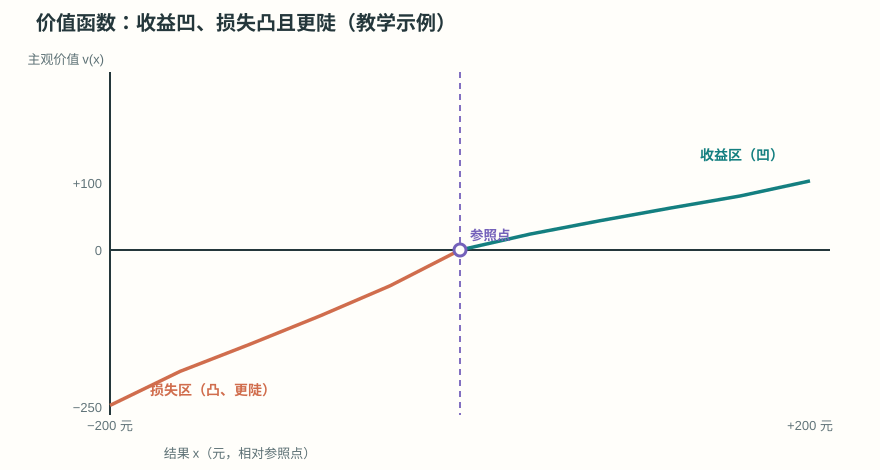
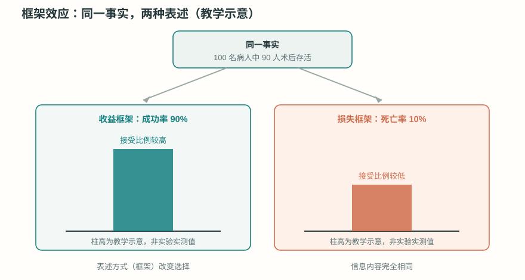

CHAPTER 24 · MICROECONOMICS
行为经济学：心理与决策
当偏好不再稳定、计算不再精确，人的选择会以可预测的方式偏离“理性人”基准。本章用参照点与损失厌恶解释这种偏离，并说明它何时有用、何时被夸大。
一个反理性的决定
一个吸烟者知道吸烟有害，仍然点上一支；一个储户知道该为养老存钱，却把工资花光。传统经济学把这类行为解释为“偏好不同”或“信息不足”，但大量实验显示它们更像可预测的系统性偏差：不是每个人偶尔算错，而是许多人在相同情境下朝同一个方向出错。
本章的问题是：如果人并非永远理性，那么“选择”这件事还能不能被推演？答案是能——只是需要换一组假设。我们将引入一个具体的替代模型（前景理论），用数值演算它的含义，再回到它的适用边界。
有限理性：够好即可
赫伯特·西蒙 Herbert Simon 提出有限理性 bounded rationality：人的认知资源有限，无法处理全部信息、精确计算每种结果的概率，于是往往不去寻找“最优解”，而是找到第一个“够好的解”，西蒙称之为满足化 satisficing。他在 1978 年获诺贝尔经济学奖。
关键推论是：偏离理性不是随机噪声，而是有结构的。正因为有结构，才能被建模、被预测、也被用来设计政策。卡尼曼与特沃斯基把这种结构提炼为可检验的规律——前景理论。
前景理论：以参照点为原点
期望效用理论按财富的绝对水平判断好坏；前景理论说，人先取一个参照点 reference point，再把结果记为“收益”或“损失”，并分别用两条曲线估值。核心规律有三条：
- 参照点依赖 reference dependence：结果的好坏取决于它相对参照点的位置，而不是绝对水平。同样 100 元，在“本以为会亏”的背景下是收益，在“本以为会赚”的背景下是损失。
- 损失厌恶 loss aversion：同样大小的损失比收益更痛，损失一侧的曲线更陡。
- 敏感度递减 diminishing sensitivity：离参照点越远，同样增量带来的感受变化越小；收益区凹、损失区凸。

把它写成公式：设结果 x 相对参照点，参数 α,β∈(0,1) 控制敏感度递减，λ>1 为损失厌恶系数。
取文献常用估计 α=β=0.88、λ=2.25。收益 100 元的主观价值 v(100)=1000.88≈57.5；损失 100 元为 v(−100)=−2.25×1000.88≈−129.5。同样 100 元的幅度，损失的心理冲击约为收益的 129.5/57.5≈2.25 倍。
注意这是构造：倍数 2.25 直接来自参数设定，演示的是损失厌恶的方向与量级，而不是某个人的精确感受。
框架效应与助推
如果好坏取决于参照点，那么“同一个事实”就可以被表述成不同框架。框架效应 framing effect指问题的说法改变了判断，即使信息内容完全相同：“成功率 90%”与“死亡率 10%”描述同一件事，却常得到不同的接受度。

这种不对称在默认选项上尤为明显。器官捐赠与制度分“选择加入 opt-in”（默认不捐）与“选择退出 opt-out”（默认捐）。Johnson 与 Goldstein（2003）对国家层面的比较发现：采用 opt-out 的奥地利同意率接近 100%，而文化相近、采用 opt-in 的德国约为 12%。差别不在强制，而在默认值。
由此引出选择架构 choice architecture：不禁止、不罚款，只调整默认与呈现顺序。塞勒与桑斯坦称之为助推 nudge，其特征是“易避而难逃”——想拒绝随时可以，但默认会把你推向某一边。养老金自动加入、把健康食品放在显眼位置、在催缴信中加上“大多数人已按时缴纳”的社会规范提示，都是常见形式。
交互实验：损失厌恶如何改变估值
前景理论价值函数
固定敏感度参数 α=β=0.88，拖动滑块改变结果幅度 x 与损失厌恶系数 λ，观察收益与损失的主观价值如何变化。
x=100，λ=2.25：收益价值 v(100)=100^0.88≈57.5，损失价值 v(−100)=−2.25×100^0.88≈−129.5；损失约为收益的 2.25 倍。对应正文的教学示例。
v(x)=x^0.88；v(−x)=−λ·x^0.88。λ=2.25、x=100 对应正文示例，不使用随机值。
如果 λ 从 2.25 降到 1.0，损失与收益的主观价值关系会变成什么？这对“为什么保险能卖出去”意味着什么？
查看答案
λ=1.0 时等幅损失与收益的主观价值相等，损失厌恶消失。现实中 λ>1，意味着人们愿意用“确定的小额保费”换掉“可能的大额损失”：减少损失带来的主观收益大于保费的确定成本。
边界与争议
行为经济学不是“人永远不理性”的口号，它有明确的适用边界：
- 前景理论的参数并非常数，会随任务、金额与人群变化；α≈0.88、λ≈2.25 只是文献常用的平均水平。
- 部分助推实验在小样本上效果显著，但在大规模重复中效果缩小甚至消失——个别研究结论不能当作普遍定律。
- “助推有效”不等于“可以随意操纵”：当选择架构涉及价值判断时，它本身就是一项政策选择。
- 本章把效用当作序数、并给定参数演算，是教学简化；它不能替代对具体人群的实证估计。
与传统经济学的正确关系是“补充”而非“推翻”：当理性人模型在特定场景失灵，行为模型能解释偏差；在偏好稳定、激励清晰的场景，标准模型依旧好用。
引用文献与适用范围
本章数值（α=0.88、λ=2.25、v(100)≈57.5、v(−100)≈−129.5）为教学示例与文献常用估计，不是本章实验的观测结果；器官捐赠的制度比较引自下列原始研究，框架效应与助推为概念概述。
- OpenStax · Principles of Microeconomics 3e（教材首页，含行为经济学相关内容）
- Tversky, A. & Kahneman, D. (1992). Advances in Prospect Theory. Journal of Risk and Uncertainty, 5(4), 297–323.
- Johnson, E. J. & Goldstein, D. (2003). Do Defaults Save Lives? Science, 302(5649), 1338–1339. DOI: 10.1126/science.1091721.
参数范围与默认选项效果会随情境与样本变化，本章不把它当作固定定律；如用于实际政策，应以目标人群的实证估计为准。